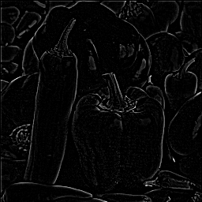
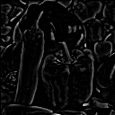
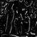

Features Multiescala
Prof. Bruno Silva
ECT/UFRN
Features: pontos Harris
O algoritmo de Harris fornece uma resposta a regiões consideradas cantos (corners )
Features: pontos SIFT
Nesta aula, é apresentado o algoritmo SIFT, para detectar pontos com características mais interessantes que os de Harris
Features Multiescala – Intuição I
Segundo o detector de cantos (corners ), em quais das imagens abaixo será detectado um canto no centro do filtro (janela 3\times3 em destaque)?
Features Multiescala – Intuição II
E no caso de uma janela 5\times5 ? No que isto influencia?
Features Multiescala – Intuição III
Uma região só é classificada como “ponto” de acordo com a matriz de autocorrelação dos gradientes calculada no centro do filtro
Existem cenários em que, para uma janela pequena (ex.: 3\times3 ), os autovalores da matriz são pequenos, mas com uma janela maior (ex.: 5\times5 ), os autovalores são grandes
A resposta do detector de cantos depende do tamanho relativo do filtro em relação ao padrão de intensidade da imagem
Features Multiescala – Intuição IV
É possível que uma região que não contenha ponto se torne uma que contenha ao:
Aumentar o tamanho do filtro
Aumentar o tamanho da imagem, mantendo o tamanho do filtro constante
Features Multiescala – Intuição IV
Esta intuição é explorada nos detectores de pontos multiescala:
SIFT (Scale Invariant Feature Transform )
Algoritmo mais conhecido que detecta este tipo de feature
Objeto de estudo desta aula
SURF (Speeded-Up Robust Features )BRIEF (Binary Robust Independent Elementary Features )ORB (Oriented BRIEF )FREAK (Fast Retina Keypoint )
Espaço de Escalas I
Formalmente, features invariantes à escala são detectadas segundo a teoria de Espaço de Escalas :
Teoria formalizada nos anos 1980
Fundamentada na área de Processamento de Sinais
Estuda a matemática necessária para representar um sinal invariante à escala
Espaço de Escalas II
Para gerar o espaço de escalas L(x,y,\sigma) de uma imagem I(x,y) , várias convoluções com o filtro Gaussiano G(x,y,\sigma) são realizadas:
L(x,y,\sigma)=G(x,y,\sigma)*I(x,y)
Espaço de Escalas III
Os valores de \sigma utilizados para gerar o espaço de escalas:
Determinam o grau de “borramento” da imagem I(x,y)
É o que se chama de escala
São escolhidos de forma matematicamente fundamentada
\sigma é um valor contínuo e, portanto, admite infinitos valores
Espaço de Escalas IV
O primeiro passo para gerar o espaço de escalas de uma imagem é construir uma pirâmide de Gaussianos da imagem de entrada:
Cada nível l da pirâmide é construído com
A imagem original é o nível 0 da pirâmide
O descarte de linha sim/linha não, coluna sim/coluna não da imagem do nível anterior
A filtragem passa-baixas utilizando um determinado valor para \sigma
Espaço de Escalas V
Abaixo, é mostrado um exemplo de uma pirâmide de Gaussianos
A pirâmide é construída com as funções pyrDown e pyrUp da OpenCV
Espaço de Escalas VI
Uma segunda pirâmide, denominada pirâmide de Laplacianos , é construída em seguida, de acordo com a lógica abaixo:
G_0-G'_0=L_0,\qquad G_1-G'_1=L_1,\qquad G_2-G'_2=L_2
Espaço de Escalas VII
A pirâmide de Laplacianos do exemplo construída é mostrada abaixo



Espaço de Escalas VIII
Cada nível l da pirâmide de Gaussianos é denominado de oitava
Para cada oitava, é feita a convolução da imagem base do nível correspondente com filtros G(x,y,\sigma) com diferentes valores de \sigma
As imagens resultantes formam subníveis na pirâmide de Gaussianos
As diferenças entre imagens de níveis adjacentes geram o espaço de escalas
Espaço de Escalas IX
A imagem a seguir exibe a pirâmide de Gaussianas e o espaço de escalas computado por diferenças de Gaussianos (DoG)
Detecção de Pontos SIFT I
Features SIFT são então detectadas no espaço de escalas:
Extremos (mínimos ou máximos) devem ser detectados ao longo da sua vizinhança espacial e ao longo de escalas
Similar a como é feito com a detecção de cantos
Detecção de Pontos SIFT II
Detecção de Pontos SIFT III
Detalhes:
Todo ponto detectado possui a escala como atributo
Também chamado de “tamanho” do ponto
A escolha dos valores/quantidade de \sigma é feita por oitava
Detecção de Pontos SIFT IV
Detalhes:
Para cada extremo, é tratado matematicamente se este se trata de um ponto presente em uma borda
É necessário interpolar os pontos ao longo do espaço e ao longo da escala para ter mais precisão (coordenadas de subpixel)
Próximos Passos
A cada ponto/escala, são atribuídos:
Uma orientação (ângulo) local
Um vetor descritor
Orientação do Ponto I
Uma orientação local é atribuída a cada ponto. Isto faz com que:
O descritor do ponto leve em consideração tal orientação
O descritor seja invariante à rotação
Orientação do Ponto II
A escala do ponto é usada para obter a imagem L do espaço de escalas que está mais próxima a ela
Utilizando diferenças de pixel, a magnitude m(x,y) e a direção do gradiente \theta(x,y) são computadas em L para cada pixel
Orientação do Ponto III
Magnitude do gradiente:
m(x,y)=\sqrt{[L(x+1,y)-L(x-1,y)]^2+[L(x,y+1)-L(x,y-1)]^2}
Direção do gradiente:
\theta(x,y)=\tan^{-1}\left(\frac{L(x,y+1)-L(x,y-1)}{L(x+1,y)-L(x-1,y)}\right)
Orientação do Ponto IV
Um histograma de orientação com 36 células (bins ) é então computado:
O histograma cobre 360^\circ , ou seja, cada bin tem 10^\circ
Alguns pontos ao redor do ponto SIFT são selecionados
m(x,y) e \theta(x,y) são calculados para cada ponto ao redor e adicionados ao histogramaA magnitude do gradiente contribui com um peso
Orientação do Ponto V
Picos no histograma de orientação determinam a orientação do ponto SIFT
Caso existam picos menores no histograma, mas que sejam pelo menos 80% do valor do máximo:
Uma cópia do ponto é criada
Esta cópia possui as mesmas coordenadas e escala, mas orientação igual à dada pelo pico secundário no histograma
Descritor Local do Ponto I
Um descritor em forma de vetor é computado para cada ponto SIFT:
Vetor de 128 números reais
Atribui uma assinatura a um ponto
Idealmente, sempre que tal ponto for detectado em uma imagem, terá um descritor similar
Permite que o ponto seja rastreado ao longo de imagens
Descritor Local do Ponto II
Torna o ponto invariante a mudanças na:
Posição
Orientação
Escala
Iluminação (parcialmente)
Perspectiva (parcialmente)
Construção do Descritor I
A partir da posição, escala e orientação do ponto:
A posição e a orientação do gradiente são computadas levando-se em consideração a orientação do ponto SIFT
O descritor é formado pelo vetor contendo histogramas de gradientes computados em 4 regiões em torno do ponto
Construção do Descritor II
Cada histograma possui 8 orientações , o que resulta no descritor de tamanho 128 (4\times4\times8 )
Por fim, o vetor é normalizado, fazendo com que mudanças na iluminação sejam minimizadas
Construção do Descritor III
Sumário
Nesta aula, feature multiescala SIFT:
Intuição do espaço de escalas
Detecção do ponto
Cálculo da orientação do ponto
Cálculo do descritor do ponto